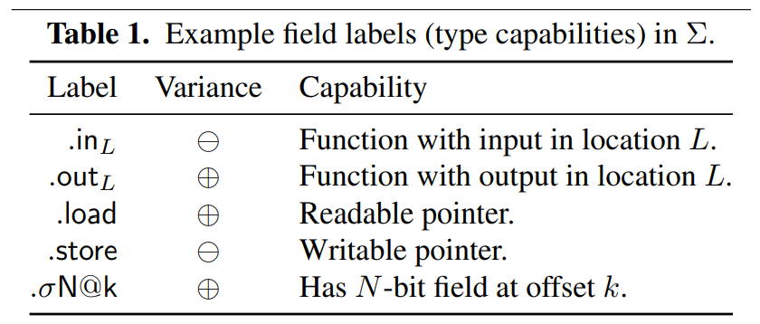

retypd
资源：
背景
monoid
读《Haskell趣学指南》的Monoids一节，理解一下。
unification-based type inference algorithms
https://www.cs.cornell.edu/courses/cs3110/2011sp/Lectures/lec26-type-inference/type-inference.htm
约束语法

sketches 约束的求解结果被表示为sketches。每个value关联上一个sketch，包含该value的所有能力，即能否被store，能否访问指定的偏移。同时sketch还包含一个可自定义的lattice，用来传播类似于typedef这种类型。
规则 规则都表示为“X ⊑ Y”的形式，意思是“X is a subtype of Y ”。
S-Pointer and S-Field⊕/⊖ 通过搜索代码，可以得知，至少在retypd-ghidra-plugin和gtirb-ddisasm-retypd中是没有和这个相关的规则的生成的。
covariant/contravariant
规则生成
- 复制操作：x := y，此时保守地认为，有可能是子类型赋值给了父类型变量：Y ⊑ X。
- 由复制操作带来的数据流，类型方向是父类型。子类型赋值给了父类型。
- 指针加载：x := *p，生成：P.load.σ32@0 ⊑ X 。
- 指针赋值：*q := y，生成 Y ⊑ Q.store.σ32@0 。
- 函数调用：如果有调用y := f(x)，生成 X ⊑ F.in 和 F.out ⊑ Y 。
- icmp：两值进行比较的时候：1 bool类型是结果的子类型。2 两个被比较的值直接，随便生成一个子类型关系？
开发与使用
如何使用当前开源的代码呢？代码是一个python模块。当前开源的两个相关的使用代码有：retypd-ghidra-plugin和gtirb-ddisasm-retypd。
首先分析retypd-ghidra-plugin是如何使用retypd的。内部代码主要分为ghidra插件的java代码，和封装模块，ghidra_retypd_provider。Java代码部分通过Ghidra提供的API，从Ghidra的反编译器的IR中提取出相关的类型约束，提取为json文件。然后调用python封装模块读取并求解，结果也表示为json文件。然后Ghidra插件部分的java代码读取结果，并设置相应的类型。（注，无论是上次分析lua虚拟机，还是这次分析/bin/ls，花的时间特别久，半小时往上）
输入ghidra_retypd_provider的样例json约束文件如下。可以观察到，每个函数的约束单独分开，同时还包含一个call graph部分。
{
"language": "x86/little/64/default",
"constraints": {
"FUN_00109d00": [
"v_7456 ⊑ v_7780",
"v_997 ⊑ int64",
"v_1441 ⊑ FUN_00109b50.in_13",
"v_4504 ⊑ v_1242.store.σ8@0",
"v_6777 ⊑ FUN_00109b50.in_5",
"bool ⊑ v_542",
"v_2301 ⊑ null",
"v_7379.load.σ8@0*[nobound] ⊑ v_1441",
"v_4396 ⊑ v_1671.store.σ8@0*[nobound]",
"v_1188.load.σ8@0 ⊑ v_1191",
"v_1671.load.σ8@0*[nobound] ⊑ v_1720",
],
"FUN_00110e10": [
...
]
}
"callgraph": {
"FUN_00109d00": [
"FUN_001158c0",
"FUN_00115920",
"FUN_00109b50",
"FUN_00115b30"
],
"FUN_00110e10": [
"strcmp",
"strlen",
"FUN_001158c0",
"getgrnam",
"strcpy"
],
...
}
}
输出ghidra_retypd_provider的样例json结果文件如下。可以观察到，包含两种类型的结果，分别是结构体和函数。结构体包含内部的成员及类型。函数块描述了函数的各个参数的类型。在这里的自定义encoder中定义了转json的函数。
这一点其实很奇怪，似乎该插件关注的核心是函数参数类型。这里后续解析和类型设置也说明了这一点。
[
{
"type": "struct",
"name": "struct_545",
"fields": [
{
"name": "field_0",
"type": "char1_t*",
"offset": 0
},
{
"name": "field_1",
"type": "char1_t[4]",
"offset": 168
}
]
},
{
"type": "function",
"name": "function_260",
"params": [
{
"index": 0,
"type": "char1_t[4]"
}
],
"ret": "char1_t[0]"
},
...
]
接着我们看ghidra_retypd_provider内部是如何调用retypd的。
- 使用
SchemaParser.parse_constraint解析每个约束项（SubtypeConstraint），它保存子类型关系左右两边的变量（DerivedTypeVariable）。每个函数的约束项放到一个集合里，再按函数名字放到map里，然后构建Program：
这里program = Program( CLattice(), {}, parsed_constraints, callgraph, )parsed_constraints就是准备好的那个map。callgraph都不用动，就是Dict[str, List[str]]。前两个参数分别是types: Lattice[DerivedTypeVariable]和global_vars: Iterable[MaybeVar]。 - 使用Solver去求解约束：
查看solver的config = SolverConfig(top_down_propagation=True) solver = Solver(program, config, verbose=LogLevel.DEBUG) _, sketches = solver()__call__方法，可以发现返回类型是Dict[DerivedTypeVariable, ConstraintSet]和Dict[DerivedTypeVariable, Sketch]。 - 传入
CTypeGenerator，得到最终的类型结果。gen = CTypeGenerator( sketches, CLattice(), CLatticeCTypes(), int_size, pointer_size, ) return list(gen().values())CTypeGenerator的__call__方法的返回类型是Dict[DerivedTypeVariable, CType]。
根据这里，每个规则大致就是var1 ⊑ var2或者var1 <= var2，然后两边的变量就是DerivedTypeVariable类型的。因此，上面结果里返回的map其实就能够用来查每个变量的类型。
retypd ghidra 插件
在我的fork仓库里可以直接下载到构建好的插件，修改版Ghidra，以及docker镜像。同时提供了给retypd的样例输入和输出。
通过修改 GhidraRetypd.zip中的extension.properties，可以绕过ghidra插件安装时的版本检查
version=10.2.3
安装Ghidra插件：
1. 打开 Ghidra 软件，点击 "File" 菜单，选择 "Install Extensions" 选项。
2. 在弹出的 "Install Extensions" 窗口中，点击 "Browse" 按钮选择你要安装的扩展程序。
3. 选中你要安装的扩展程序文件（通常是一个 zip 压缩文件），然后点击 "Open" 按钮。
4. 点击 "OK" 按钮开始安装扩展程序。在安装过程中，Ghidra 软件会自动解压缩扩展程序文件，并将它们安装到正确的目录中。
5. 安装完成后，重启 Ghidra。
算法详解
我们分析的不是具体的程序中的变量，而是他们的类型和类型之间的关系。因为复杂的约束关系，我们会把类型再设为一个类型变量，称为DataTypeVariable，DTV。
什么是Sketches：一个类型变量DTV，可能有各种各样的能力，比如可以在offset为4的地方load出一个四字节的值 （.load.σ32@4）。首先可以遍历所有的约束关系，比如v_4504 ⊑ v_1242.store.σ8@0，对每个关系单独看两边的变量，然后看比如v_1242是否被直接这样取过offset，然后把这些操作收集起来。但是这样还不够，因为可能因为约束的存在，其他变量能做的操作，它因为约束，应该也能做。这些都求解出来，得到的数据结构就是一个Sketch。